Exercise, in snacks.
Level up your day.
No hour-long workout to squeeze in. SnackUp suggests micro-sessions of a few minutes, spread across your day based on your time and context — that add up, guilt-free, for a body that keeps progressing.
Beta open — tap to join!A few minutes are enough
Snacks from 30 seconds to a few minutes, whenever you have a moment — no need to block out a full hour.
It adds up
Every snack counts. Spread across the day, they cover a balanced weekly volume, without you even thinking about it.
No guilt
Never a "missed session". SnackUp tracks your progress toward the weekly goal, not isolated sessions you have to nail at all costs.
Inside the app
Swipe to take a tour of the app.
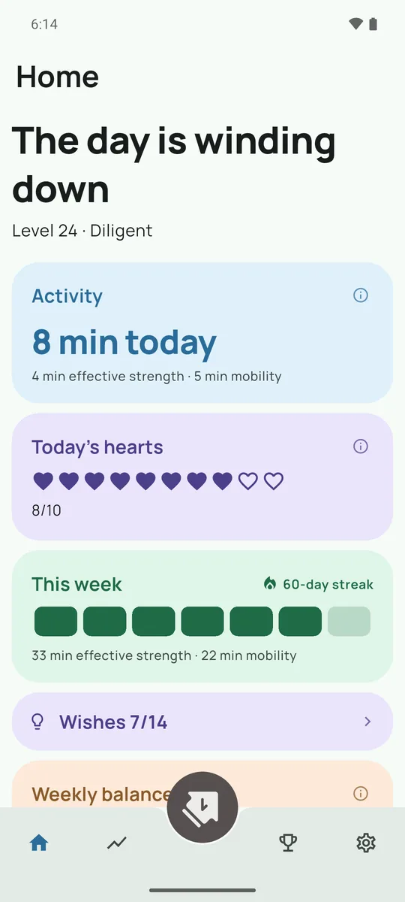
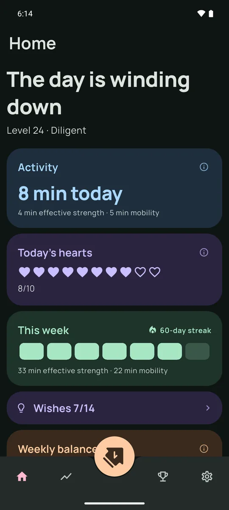
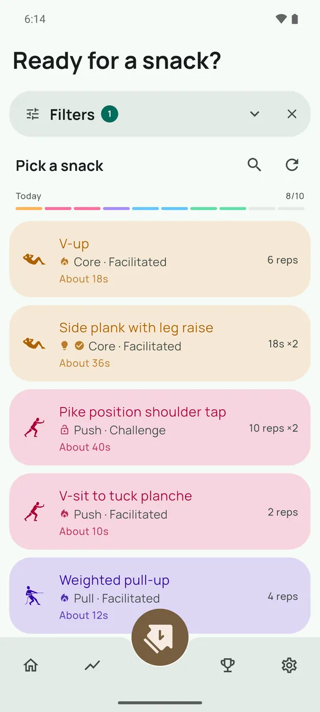
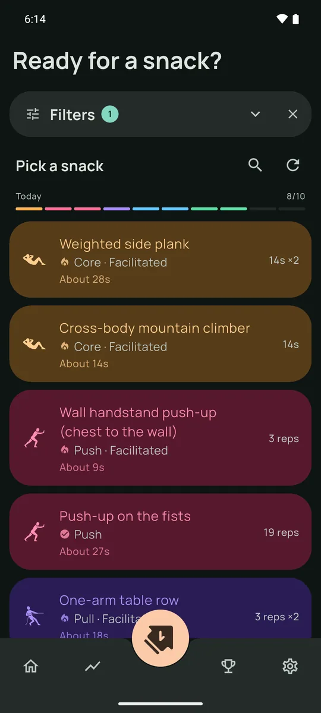
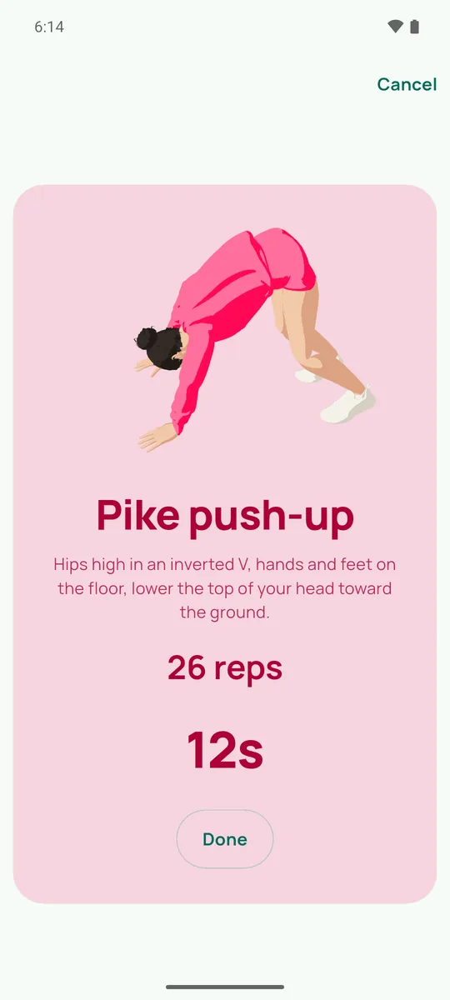
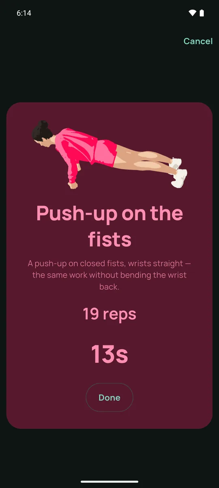
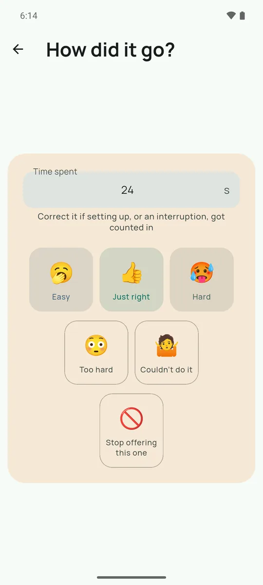
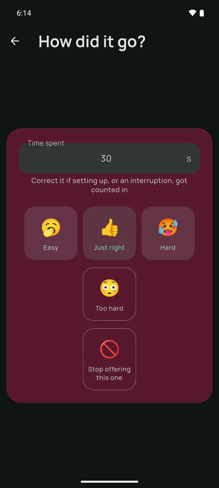
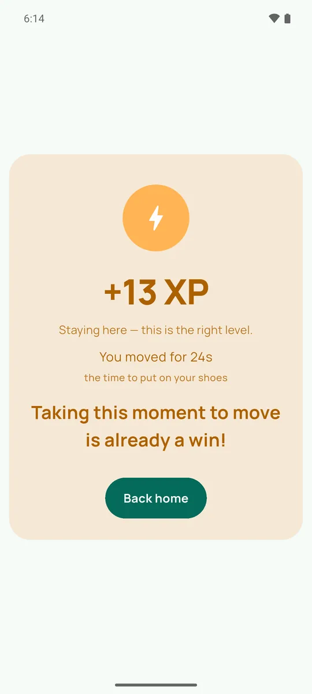
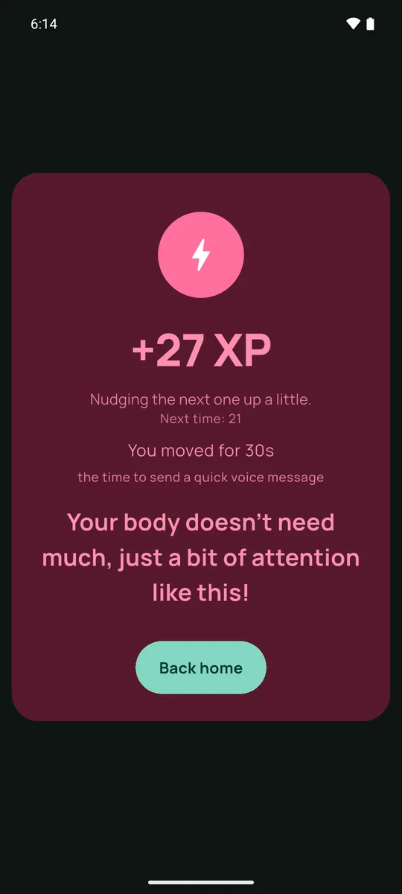
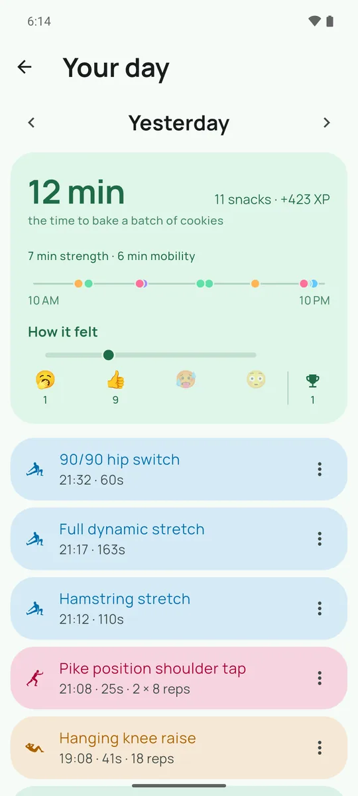
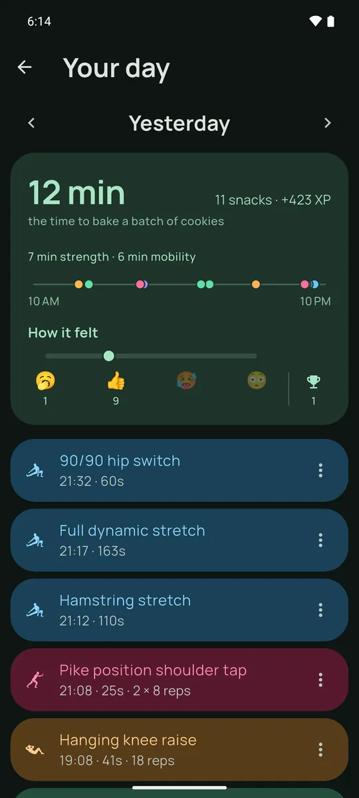
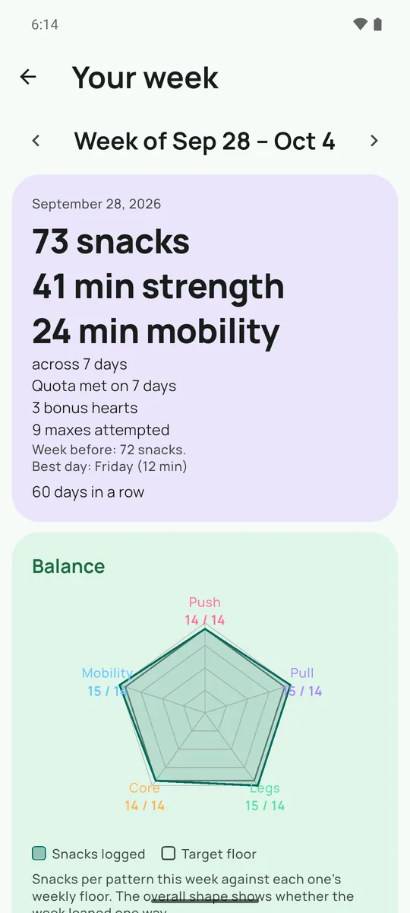
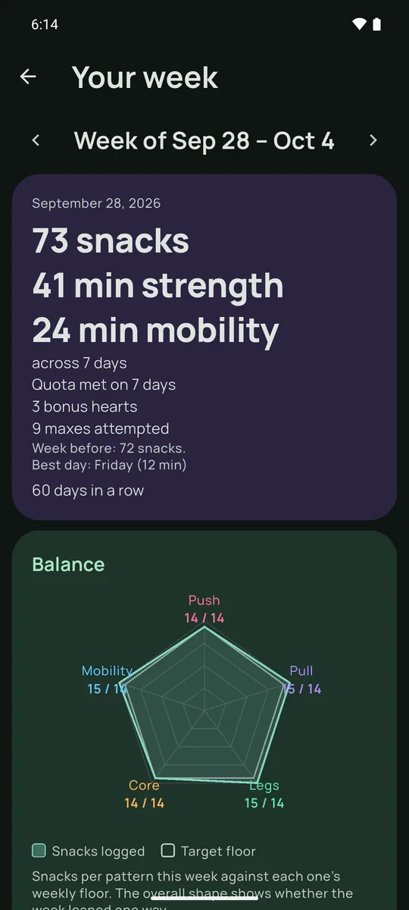
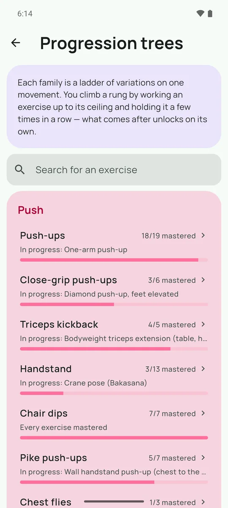
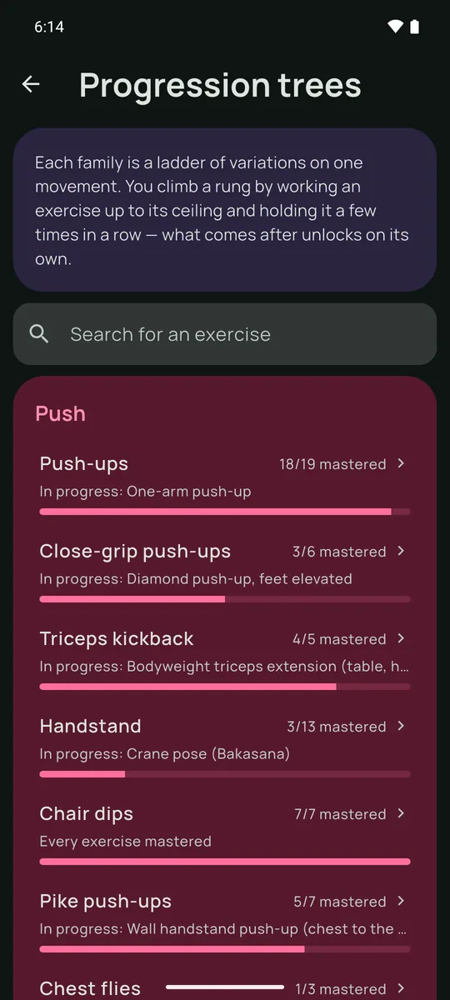
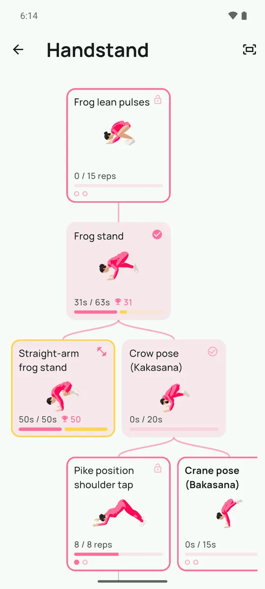
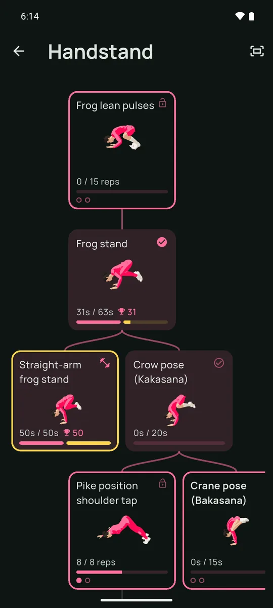
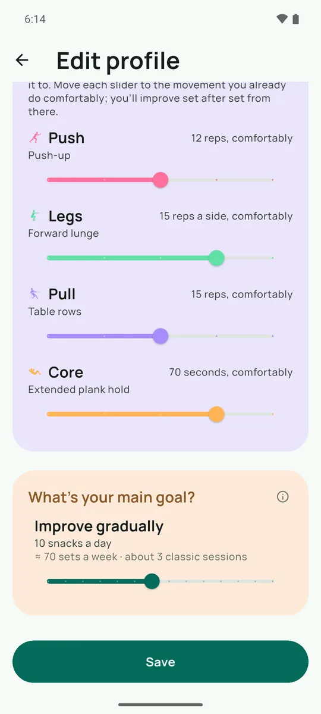
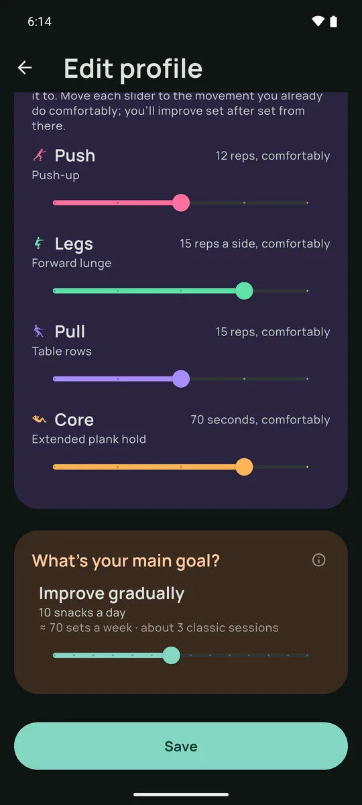
How it works
-
A suggestion shows up
Through the day, at the moments you are actually free. The app learns from what you accept and what you let pass — there is no session to schedule.
-
You pick one and do it
A handful of exercises matched to your time, where you are, and what you have already done this week. Bad moment? Another one will come.
-
The week fills up
Every snack feeds the balance of your week and your progress along the exercise tree. What you did not do does not follow you around: the week starts over.
What stays with you
SnackUp is a local app. There is no server on the other side: no account, no profile on the internet, nothing to delete anywhere but on your phone.
- No account — no sign-up, no email address to hand over.
- Everything stays on the device — and exports, encrypted, when you change phone.
- Offline — the app works in full without a connection.
- No ads, no trackers — no analytics, no data sold on.
Free, with no wall: the engine, the full week, the reminders, the history and the encrypted backups stay that way. An optional premium subscription adds comfort and funds what comes next. The details are in the terms of use and the privacy policy.